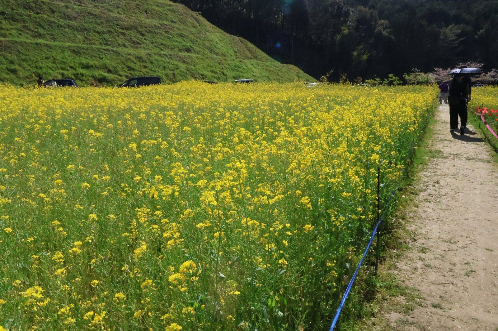
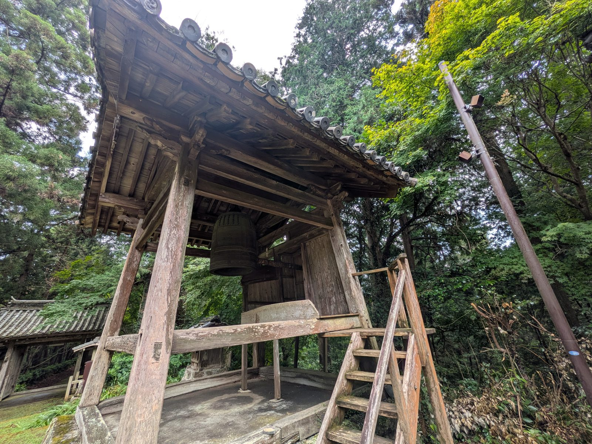
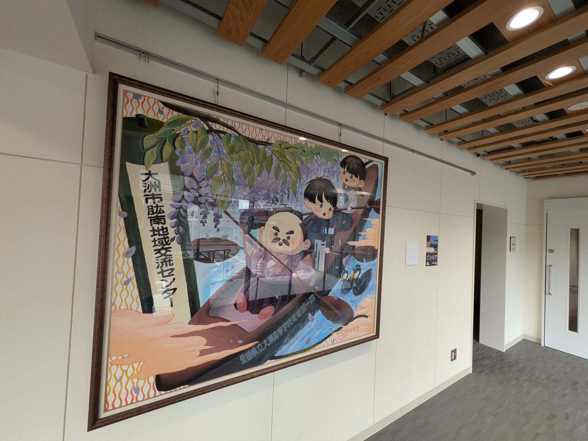

大洲市 非公式生活情報サイト
市役所や議会の硬い資料、SNSの断片的な話題を、1人の市民の目線で読み解いています。 制度の話も、まちの小さな発見も。
ニュース一覧をもっと見る
1本の記事に収めるにはもったいない題材を、時間のあるときにじっくり読んでもらうための長文コーナーです。 出典を並べて、分からなかったことも正直に書いています。 「大洲の自由研究」の一覧を見る →
129記事につけたテーマタグを、実際の件数で重み付けしました。クリックすると一覧に飛びます。
Tag frequency ― 全129記事のテーマタグ集計
数字は該当タグがついた記事数。


